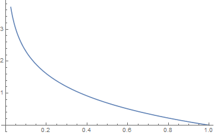
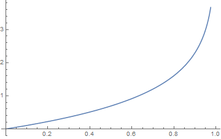

【逻辑回归】
模型
令 $\theta = (w_1,w_2,…,w_n,b)$, $x = (x_1,x_2,…,x_n,1)$,则有：
$$
\theta^T \cdot x = w_1x_1+x_2x_2+…+w_nx_n+b
$$
逻辑回归要训练得到的函数模型是：
$$
h_\theta(x) = f(\theta^T \cdot x)
$$
其中f是下面的函数：
$$
f(z) = \frac 1 {1+e^{-z}}
$$
函数f的图像如下图所示：
1 | Plot[1.0 / (1 + E^(-x)), {x, -10, 10}] |

$h_\theta(x)$ 的结果是(0,1)，含义是类别为正类别的概率; $\theta$的含义是模型的参数.
算法的目标是在已知$(x_1,x_2,…x_n)$ 和对应的 $y$ 的若干个样本的情况下，求解出$(w_1,w_2,…,w_n,b)$这些参数，使得损失函数最小。
Wolfram Mathematica 是一个专业的科学计算软件，使用它可以非常方便的绘制出函数的图形。
Plot[1.0 / (1 + E^(-x)), {x, -10, 10}]就是绘制出上面的函数图形的命令。
策略
逻辑回归使用的损失函数是：
$$
cost(h_\theta(x),y) = \begin{cases}
-log(h_\theta(x)) & \text{if y = 1} \
-log(1-h_\theta(x)) & \text{if y = 0}
\end{cases}
$$
其中，$h_\theta(x)$就是模型预测的结果，$y$是实际的标签，取值是$0，1$.
当$y=1$时，$h_\theta(x)$接近1的时候，损失函数$-log(h_\theta(x))$接近0，而当$h_\theta(x)$接近0的时候，损失函数是接近正无穷的。其对应的关系如下图所示：

当$y = 0$时，$h_\theta(x)$接近0的时候，损失函数$-log(1-h_\theta(x))$接近0，而当$h_\theta(x)$接近1的时候，损失函数$-log(1-h_\theta(x))$接近正无穷。其对应的关系如下图所示：

分段函数不利于表达，把上面的cost函数写成统一的格式如下：
$$
cost(h_\theta(x),y) = - ( y \times log(h_\theta(x)) + (1-y) \times log(1-h_\theta(x)) )
$$
对于一个有m个样本的训练集，训练集上的损失为：
$$
J(\theta) = - \frac 1 m \sum_{i=1}^{m} (y^{(i)} \times log(h_\theta(x^{(i)})) + (1-y^{(i)}) \times log(1-h_\theta(x^{(i)})))
$$
其中，$i$表示训练集中的第$i$个样本，$x$表示特征向量$(x_1,x_2,…,x_n,x_{n+1})$, $y$ 表示实际的标签，取值$0,1$。
算法
找到一种算法，在已经知道$x$和$y$的情况下，求解出能够使得$J(\theta)$最小的$\theta$的值，具体的就是$(w_1,w_2,…,w_n,b)$的值。
梯度下降法
梯度， 函数对每一个参数求偏导数，偏导数组合成向量，向量的方向就是梯度的方向，函数在梯度的方向上升最快，在梯度的反方向下降最快。
使用梯度下降法求解参数的步骤：
- 初始化参数。
首先给参数一个初始值$\theta = \theta^0$, 定义一个步长$\alpha$,就是每次要在梯度的方向上移动的距离; 定义一个终止条件$\epsilon$，确定算法在什么条件下终止。（一般是看参数更新前后两者的差值，小于某一个很小的数字，就可以结束算法）
- 计算梯度：
$$
\frac \partial {\partial\theta_j} J(\theta_1,\theta_2,…,\theta_{n+1})) = \frac 1 m \sum_{i=1}^m (h_\theta(x^{(i)}) - y^{(i)})x
$$
其中，$j \in (1,n+1)$ 表示第j个参数， $i \in (1,m)$ 表示第m个样本。
这里涉及到函数的求导，先来复习一下函数的链式求导法则：
$$
\frac {dx} {dy} = \frac {dx} {dz} \times \frac {dz} {dy}
$$
举个例子：
sigmoid 函数的导数是：
$$
y = f(z) = \frac 1 {1 + e^{-z}}
$$
它的导数可以很容易的求出来，还可以把它表示成y的乘积的形式。
$$
\frac {dy} {dz} = \frac {e^{-z}} {1+e^{-z}} = y(1-y)
$$
现在来求损失函数的对每一个参数$\theta_i$的导数：
$$
\frac {\partial cos(h_\theta,y)} {\partial \theta} = (h_\theta(x) - y) \cdot x
$$
假设一共有m个训练样本,$i \in (1,m)$, 一共有n+1个参数，$j \in (1,n+1)$, 则每个参数的导数如下：
$$
\frac {\partial cos(h_\theta(x),y)} {\theta_j} = \frac 1 m \sum_{i=1}^m (h_\theta(x^{(i)}) - y^{(i)})) x_j^{(i)}
$$
根据上面的公式，初始化$\theta^0$之后，可以利用整个训练集的数据$(x^{(i)},y^{(i)}),i \in (1,m)$, 计算出一个梯度向量$(\Delta \theta_1,\Delta \theta_2,…,\Delta \theta_{n+1})$.
- 更新参数
$$
\theta^{i+1} = \theta^i + \alpha \Delta \theta^i
$$
其中，$\theta^i$表示第$i$次迭代的时候的参数取值，$\Delta \theta^i$表示第二步计算出来的梯度，$\alpha$表示 学习率，是控制梯度下降的每步大小的一个超参数，需要自己设置。
- 比较更新前后的参数的变化
$$
\epsilon = \sum_{i=1}^{n+1} ( \theta^{i+1} - \theta^{i} )
$$
如果$\epsilon$的值小于预先确定的结束条件，算法结束，最后的$\theta$就是要求解的参数，如果$\epsilon$大于结束条件，则转到第三步继续迭代，直到满足结束条件为止。
梯度下降的几种策略：
上面的例子中，每一次参数的更新，我们是使用训练集中的所有样本计算的梯度，这样做每次计算出来的梯度比较准确，但是当训练集合非常大的时候，每次的计算开销就很大。
$$
\frac {\partial cos(h_\theta(x),y)} {\theta_j} = \frac 1 m \sum_{i=1}^m (h_\theta(x^{(i)}) - y^{(i)})) x_j^{(i)}
$$
可以看出，求解的方法是每个样本计算出一个梯度，然后求和取平均值作为最后的梯度。随机梯度下降法
随机梯度下降法就是把上面的式子中的求和符号去掉，每次只使用一个样本计算梯度，计算出来就更新一次参数，然后再在更新之后的参数上，利用下一个样本计算梯度，这样每次更新的速度都很快，但是只是利用一个样本计算出来的梯度可能根本就不是函数上升最快的方向，所以收敛的速度不一定快。
批量梯度下降法
这种方法就综合上面两种方法的利弊提出的，每次使用若干个（一般是10个）样本计算梯度，计算完就更新参数，然后在更新的参数的基础上利用另外的10个样本计算下一个梯度方向，直到算法结束。
梯度下降法算法调优
通过梯度下降法的求解过程，我们知道要设置三个重要的参数，一个是$\theta^0$, 初始参数的值；一个是$\alpha$,学习率；一个是算法停止条件，$\epsilon$.
如果要优化的函数是凸函数（只有一个极值点），$\theta^0$ 的值不会影响最终的结果，但是会影响算法结束的速度；如果优化的函数有多个极值点，$\theta^0$ 的初始值会影响最后的结果。这个时候，一个解决的办法是随机选择多次初始点，分别计算出极值点，选择极值点最小的那个初始点作为算法的初始点。 理论上如果选择足够多的初始点(并且是随机选择)，一定可以找到真正的极值点。
$\alpha$ 的选择也十分重要，如果过小，算法迭代次数过多，会结束的非常慢；如果过大，很可能会越过极值点，找不到正确的结果。
$\epsilon$ 的选择影响算法的终止条件，如果过大，可能还没有达到极值点就结束了，如果过小，可能导致算法运行时间过长。
除此之外，使用梯度下降法时候，特征一般要归一化处理，这是因为，如果不同的维度取值范围差异很大的话，算法的迭代效率就很差，归一化的方法是计算数据的均值和方差，然后每个特征减去均值之后除以标准差
使用随机梯度下降的时候，如果数据集不是线性可分的(存在噪声的情况)，可能会造成梯度来回波动的情况，可以下面的方式优化：
- 在每次迭代时，调整更新步长$\alpha$的值。随着迭代的进行，$\alpha$越来越小，这会缓解系数的高频波动（也就是每次迭代系数改变得太大，跳的跨度太大）。当然了，为了避免$\alpha$随着迭代不断减小到接近于0（这时候，系数几乎没有调整，那么迭代也没有意义了），我们约束$\alpha$一定大于一个稍微大点的常数项.
- 每次迭代，改变样本的优化顺序。也就是随机选择样本来更新回归系数。这样做可以减少周期性的波动，因为样本顺序的改变，使得每次迭代不再形成周期性。
牛顿法
拟牛顿法
对模型的理解
理解一个模型的含义有时候会很有帮助，但不是所有的模型都有确切的含义，幸运的是，逻辑回归模型有一些很好的解释便于理解实际含义。
对数几率
在逻辑回归模型中，$\theta^T \cdot x$的值是有含义的。假设一件事发生的概率是$P$,不发生的概率是$1-P$,定义一件事发生的几率 为发生的概率和不发生的概率的比值：$p / (1-p)$. 定义一件事发生的对数几率是：$log(p / (1-p))$.
逻辑回归的输出$h_\theta(x)$可以看作分类为1的概率：
$$
P(Y=1|X) = h_\theta(x) = \frac 1 {1 + e^{-\theta^T \cdot x}}
$$
记A表示分类结果是1这一时间，则A的对数几率是：
$$
logit(A) = log(\frac {h_\theta(x)} {1-h_\theta(x)}) = \theta^T = w_1 x_1+ x_2 x_2 + … + w_n x_n + b
$$
$\theta^T \cdot x$ 的含义其实是事件A发生的对数几率，取对数并不影响函数原来的极值点，可以认为是原来的含义。所以可以认为$\theta^T \cdot x$ 度量了事件A发生的几率。
而原来的$h_\theta(x)$ 表示的事件A发生的概率。
最大似然
最大似然的思想是： 选择使得已经发生的事件概率取得最大值的 那些参数。 例如$\theta$表示箱子的编号，1号箱子里面有1个红球，9个白球，2号箱子里面有1个白球，9个红球；如果任意选择一个箱子，任意取一个球，发现取得的是红球，那么根据最大似然的原理$\theta = 2$,因为如果是2号箱子，取得红球的概率是0.9， 如果是1号箱子，取得红球的概率是0.1.
把训练集中的出现的样本作为一次实验，那么出现这种实验结果的概率是：
$$
P(Y=1|X)^{y_i} (1-P(Y=0|X))^{1-y_i}
$$
所有的m个样本出现的概率是每一个样本出现的概率的乘积：
$$
L(\theta) = \prod_{i=1}^m (h_\theta(x))^{y_i} (1-h_\theta(x))^{1-y_i}
$$
用最大似然的观点，逻辑回归转化成求$L(\theta)$最大的时候，$\theta$的值。求解该函数的极大值，就是求解负函数的极小值。对$\theta$求导之后会发现，最优化函数和上面提到的用损失函数表示的是一样的。所以求解的方法依然是梯度下降法。
编写算法（Python）
1 | # -*- coding: utf-8 -*- |